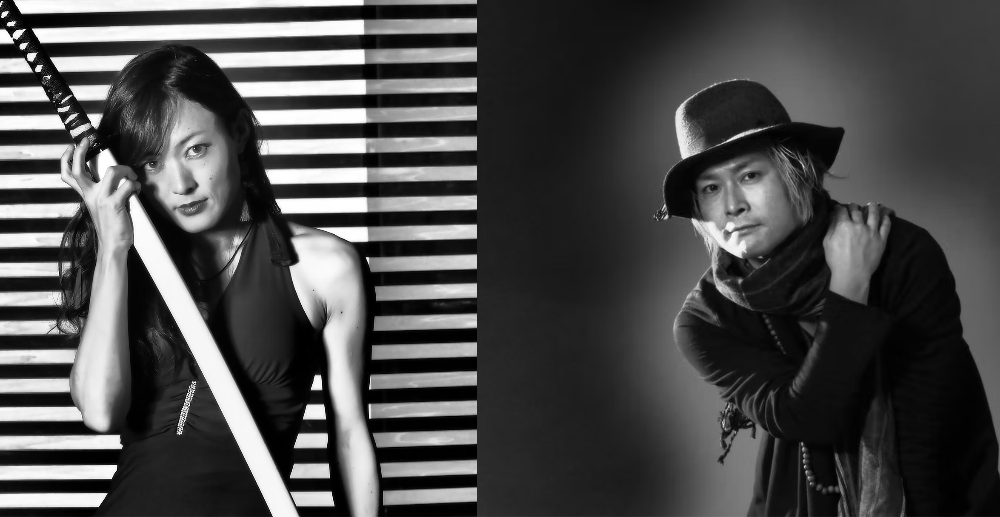
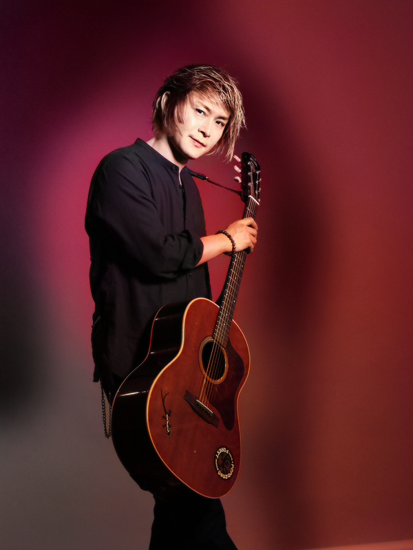
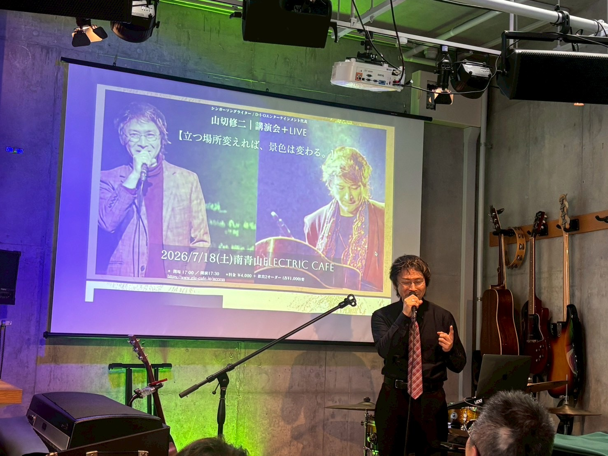
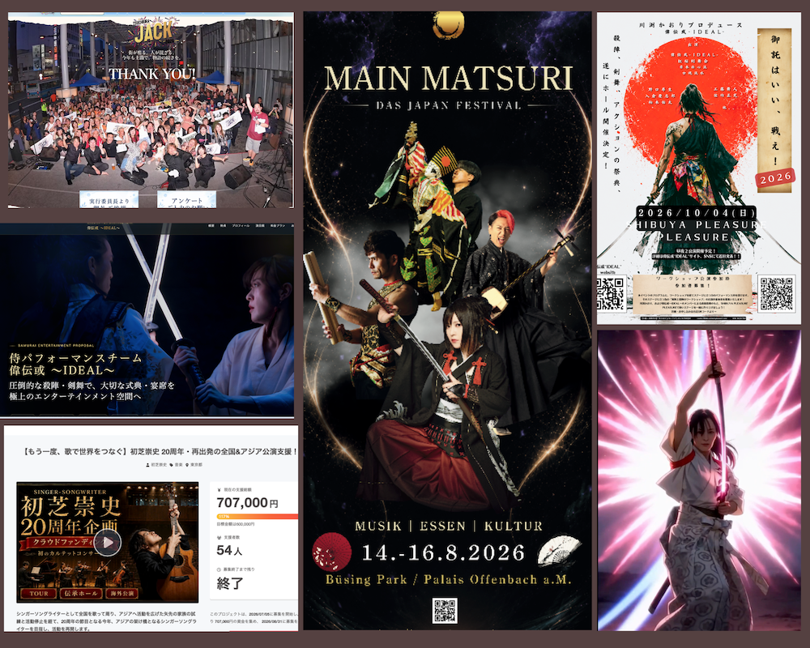

Rock Duo KAO=S（カオス）
世界のステージで鳴らす
剣舞師・シンガーの川渕かおりとのロックユニットKAO=S（カオス）ではリーダー/ギタリストを務め、世界最大音楽見本市SXSW、米CNN番組を機に、13か国のフェスティバルなどに出演。
01 / Profile
1975年生まれ。山口県宇部市出身。福岡大学法学部法律学科卒業。
1997年上京後、ユニットやバンドのシンガー、ソロの弾き語りなどでライブやリリース活動を行う。
2011年、川渕かおり（剣舞師・モーションアクター・女優・シンガー）と、ロックユニットKAO=S（カオス）を結成。ギタリスト/リーダーを担当、ソロシンガーの活動からシフトした。
KAO=Sは、2012年から二年連続で世界最大音楽見本市SXSW（サウスバイ・サウスウエスト）に出演。アメリカツアーを敢行し、米CNN番組で世界中に紹介された。
2014年に起業。セルフマネジメントとして設立したD･I･Oエンターテインメント合同会社は、KAO=Sと各メンバーの芸能活動全般のマネジメント、ショウのプロデュース、演舞の提供、出版業務なども行い、音楽だけでなく、ゲーム・アニメ・和文化・舞台制作のフィールドの業務にも携わっている他、約20カ国でのライブ公演・ワークショップなどを行なってきた。
また、KAO=Sに剣舞師や和楽器奏者を加えた大所帯でのショウを国内外で行う中で、プロデューサー・演出家としても活動。2024年には、東京で開催されたABAC（APEC諮問委員会）国際会議の21カ国来賓向けのガラディナーショウでは総合演出を担当した他、舞台監督を毎年担当しているドイツMAIN MATSURIフェスが、外務大臣表彰を拝受した。
2025年に50歳になったのを機に、14年に亘り休止していたソロシンガーとしての活動を再開し、一年かけて、一人で47都道府県の弾き語りツアーを遂行し、ソロとしては初のホール会場での単独公演を、SHIBUYA PLEASURE PLEASUREで行った。
ソロシンガー、ギタリストを務めるロックユニットKAO=Sといったミュージシャンとしての活動の他、マネジメント経営、プロデュース活動、講演会やアーティストのコンサル業務など、多岐に亘る分野で活躍している。
02 / Selected Work
音楽、舞台、作曲、講演、アーティスト支援。表現することと、表現が届く場をつくること。その両輪で重ねてきた仕事をご紹介します。

Rock Duo KAO=S（カオス）
剣舞師・シンガーの川渕かおりとのロックユニットKAO=S（カオス）ではリーダー/ギタリストを務め、世界最大音楽見本市SXSW、米CNN番組を機に、13か国のフェスティバルなどに出演。

Solo Singer 山切修二
KAO=Sの始動に伴い、15年程休止していたソロシンガーとしての活動を、50歳より再開。一年をかけ47都道府県一人ツアーを敢行、ホール公演を完遂。幅広い声域と声色を持ち、オープンコードを使ったギター演奏を得意とする。

Japanese Entertainment 和のショウ提供
川渕かおりとのユニットKAO=Sの各国での公演を機に、和楽器奏者や剣舞師とバンドによる大所帯和風エンターテインメントショウをプロデュース。東京の他、スペイン、ドイツ、サウジアラビアで披露。

Stage Producer プロデュース/キャスティング
フランクフルト／オフッフェンバッハで開催される日本文化フェスティバルMAIN MATSURIのステージを2018年よりプロデュース。演者・奏者のキャスティング、プログラム制作・舞台監督・テーマ曲作曲も担う。MAIN MATSURI は2024年にドイツ外務大臣表彰を拝受。

Stage Direction 演出・舞台監督
自社公演主催の他にも、外注でプレゼン代行・総合演出や舞台監督業務を担当。ABAC（APECビジネス諮問委員会）国際会議ガラディナーショー総合演出（2024）、東京都倫理法人会「倫理経営フォーラム」舞台監督（2026、京王プラザホテル新宿）、Strange Community 舞台監督（2026、渋谷JZ brat・さくらホール）他多数。

06 / TALK & VOICESpeaker / Vocal Coach 講演会・レッスン
国内外のステージに立ちつつ、舞台裏で公演を支えてきた経験を人生に重ねて語る講演会を開催。また、海外の環境下や日本全国一人ツアーでの声の維持や、響かせる発声方法など、経験値に沿った単発ボーカルコーチングを行う。

07 / ARTIST SUPPORTArtist Support 活動支援サポート
主に、40代以上のアーティストを対象に、クラウドファンディング制作代行、販促ツール制作代行、音楽配信代行WEBSITE・LP制作、動画制作等をサポート。
03 / Contact
D･I･Oエンターテインメント合同会社
〒170-0005
東京都豊島区南大塚2-5-20 ミモザビル3F